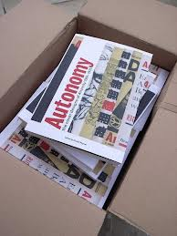

A collaboration between publisher Robin Kinross of Hyphen Press and designer Peter Brawne of Matter has resulted in a new book, Autonomy: the cover designs of Anarchy, 1961–1970, the subject of an event at Housmans bookshop in London on Saturday 9 February 2013 (6.30 pm). The author, editor & designer Daniel Poyner of New Normal studio will introduce the book followed by the designer & writer Richard Hollis who will talk about the cover designs of Anarchy. Writer & environmentalist Ken Worpole will talk about this book and also about the recent collection of Colin Ward’s writings Talking green, from Five Leaves. Anything to do with Colin Ward is always popular, so if you want to come, be sure to reserve a seat by contacting Nik @ housmans.com.